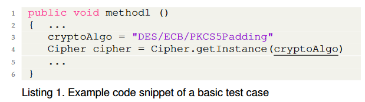
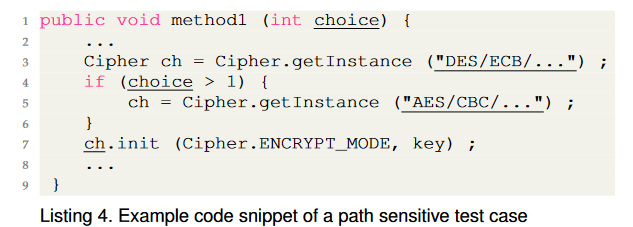

![[Review] Evaluation of Static Vulnerability Detection Tools with Java Cryptographic API Benchmarks](/images/31/cover.png)
[Review] Evaluation of Static Vulnerability Detection Tools with Java Cryptographic API Benchmarks
The paper assesses the performance of the current static vulnerability detection tools in the era of Java cryptographic API misuse.
Main contributions:
- provide two benchmarks: CryptoAPI-Bench, ApacheCryptoAPI-Bench.
- CryptoAPI-Bench consists of 181 test cases covering 16 types of Cryptographic and SSL/TLS API misuse vulnerabilities, with basic level and advanced level.
- ApacheCryptoAPI-Bench documents the API misuse vulnerabilities from 10 real-world Apache projects. This benchmark is for checking the scalability(the ability to induce low computational overhead to analyze large code-bases) of the detection tool.
- evaluate four static analysis tools based on the two proposed benchmarks: specialized tools(CryptoGuard, CrySL), general purpose tools(SpotBugs, Coverity).
Background:
Categorizes the types of cryptographic API misuse.
A brief introduction to 4 static analysis tools.
Implementation:
CryptoAPI-Bench
Basic Cases: some simple misuse examples

Advanced Cases: more complex examples
Interprocedural Cases: API misuse exists in different function procedures.
Field Sensitive Cases: API misuse exists in different fields in the same object.
Combined Cases: combine both Interprocedural Cases and Field Sensitive Cases.
Path-Sensitive Cases: function execution depends on the path condition.

Miscellaneous Cases: distinguish some irrelevant constraints or other interfaces.
Multiple Class Cases: API misuse exists in different classes.
ApacheCryptoAPI-Bench
- include the early version of real-world large 10 Apache projects to check the scalability property of different tools.
- enlist 121 test cases, and 79 of them are basic cases, 42 of them are advanced cases.
- check the official documents of the Apache Projects and filter out the ground truth API misuse.
Evaluation:
Evaluation Criteria: True positive, False positive, False negative.
Main findings:
- tools that are specialized to detect cryptographic misuses cover more rules and higher recall than general purpose tools.
- none of the existing tools is path-sensitive.
Future work:
- focus on path-sensitive API misuse detection.
- focus on API misuse in other eras and other programming languages.
[Review] Evaluation of Static Vulnerability Detection Tools with Java Cryptographic API Benchmarks